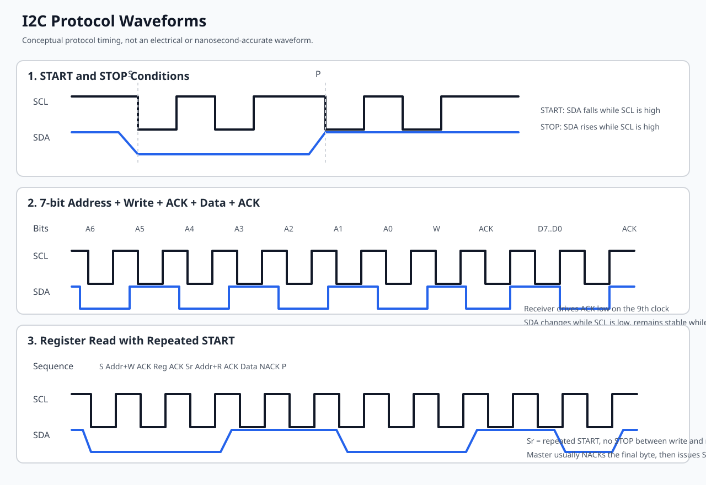
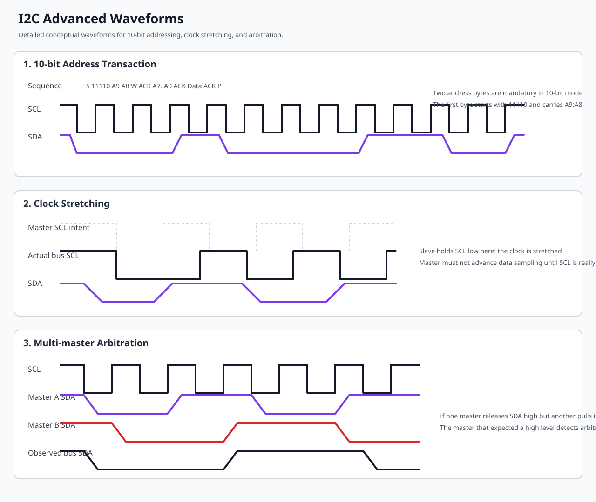
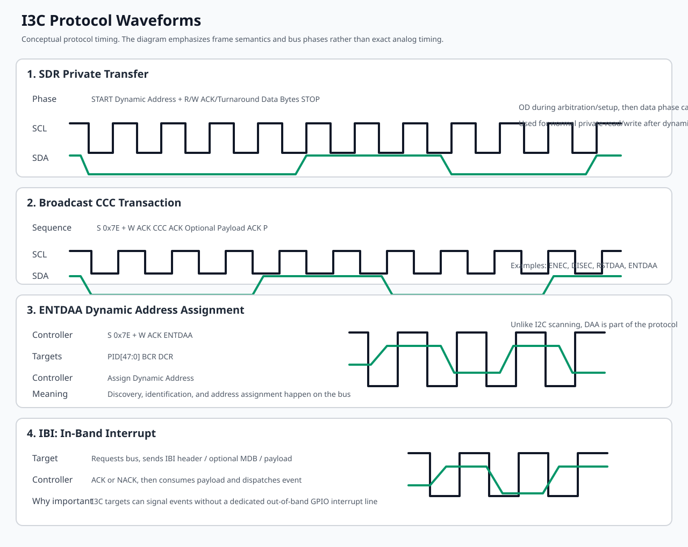
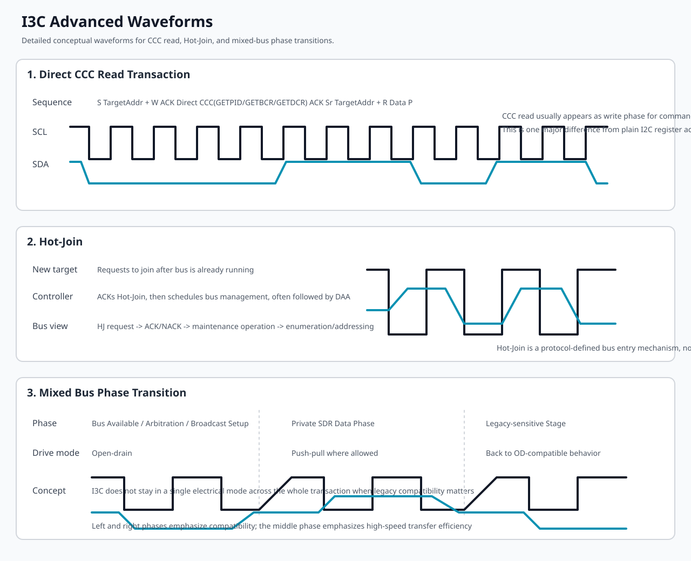

本文围绕 7 个目标展开：
先给出最重要的判断：
I2C 是两线总线：
其电气特征是开漏/开集电极，需要外部上拉电阻。任何设备只能主动拉低，释放后由上拉电阻把线拉高。
I2C 基本帧序：
I2C 的关键行为：
下面的图是协议级概念波形图，重点用于说明帧结构和边沿语义，不表示精确纳秒级比例。

图中重点观察：
SCL 为高时，SDA 从高变低。SCL 为高时，SDA 从低变高。SDA 在 SCL 高电平期间必须稳定，数据通常在 SCL 低电平期间切换。为了对应规范里更容易被问到、也更容易在驱动实现里出问题的部分，再补 3 个进阶场景：10-bit 地址、clock stretching、multi-master arbitration。

图中重点观察：
11110xx。SCL 保持在低电平，主设备必须等待，不能继续推进位时序。I2C 速率模式：
SMBus 可以看成 I2C 的受限子集或上层约束协议。
SMBus 相比 I2C 更强调：
Linux I2C 子系统里，SMBus 通过 i2c_smbus_xfer() 和一组 helper 暴露；若控制器不支持原生 SMBus，内核可以退化为 I2C message 模拟。
I3C 是 MIPI 定义的更现代串行总线，目标是：
I3C 的核心事务包括：
I3C 的物理层与时序特征：
I3C 常见地址与命令概念：
下面的图同样是协议级概念图，重点突出 I3C 相比 I2C 多出来的控制平面：CCC、DAA、IBI，以及 open-drain 到 push-pull 的阶段切换。

图中重点观察：
0x7e 广播 CCC，例如 ENTDAA、RSTDAA、ENEC。PID/BCR/DCR，最后由控制器分配动态地址。I3C 更容易混淆的点不在普通读写，而在总线管理动作，因此进阶图重点补 3 类：CCC 读事务、Hot-Join、mixed-bus 的 open-drain 到 push-pull 切换。

图中重点观察：
GETPID、GETBCR、GETDCR。只会看协议波形还不够，真正写 Linux 控制器驱动或设备驱动时，要把这些波形事件映射成明确的软件状态、错误路径和中断处理。
I2C 侧重点：
drivers/i2c/busses/i2c-cadence.c 这类驱动里，这对应消息提交、HOLD bit、完成中断和 bus busy 清理。i2c_transfer() 里的多个 struct i2c_msg；驱动若错误地下发 STOP，就会把“写寄存器地址再读数据”拆坏。SCL 是否被拉低，以及驱动里 timeout 路径是否过早触发。I3C 侧重点：
drivers/i3c/master/i3c-master-cdns.c 这类驱动里，CCC 不是普通私有收发，而是单独的提交路径；如果把 CCC 当普通 xfer 处理，DAA、事件使能、能力读取都会异常。如果把这些映射关系记住，就会知道：波形不是“硬件同学才看的图”，而是驱动状态机的外在表现。
| 维度 | I2C | I3C |
|---|---|---|
| 电气层 | 开漏 + 上拉 | 初始化阶段开漏，传输阶段可 push-pull |
| 地址模型 | 静态 7/10-bit 地址 | 静态地址可选，运行期动态地址是核心机制 |
| 速率 | 常见 100k/400k/1M/3.4M | SDR 典型可到 12.5 MHz 级别 |
| 中断机制 | 依赖额外 GPIO 或轮询 | IBI 原生带内中断 |
| 发现机制 | 一般依赖板级描述或扫描 | DAA + CCC 原生发现/配置 |
| 兼容性 | 原生 I2C | 向后兼容 I2C target |
| 时钟拉伸 | 常见 | 设计目标是减少 I2C 式低效交互 |
| 协议复杂度 | 低 | 明显更高 |
| Linux 生态成熟度 | 极成熟 | 成熟度正在提升，仍以 master/controller 为主 |
I2C 硬件设计重点：
I2C 常见硬件问题：
I2C 控制器设计常见寄存器能力：
I3C 硬件设计重点：
I3C 常见寄存器/硬件资源：
I3C 设计里必须理解的几个字段：
这是 I3C 真正有工程价值的地方。
混合总线里需要注意：
本节重点分析以下文件：
include/linux/i2c.hdrivers/i2c/i2c-core-base.cdrivers/i2c/i2c-core-smbus.cdrivers/i2c/i2c-core-slave.cdrivers/i2c/busses/i2c-cadence.cdrivers/i2c/busses/i2c-gpio.cdrivers/i2c/algos/i2c-algo-bit.cdrivers/i2c/i2c-slave-eeprom.cdrivers/i2c/i2c-stub.cLinux I2C 子系统可以分为 5 层：
struct i2c_algorithm，定义 xfer、smbus_xfer、功能位、slave register/unregister。struct i2c_driver + struct i2c_client。i2c-slave-eeprom、i2c-slave-testunit、i2c-stub。struct i2c_adapter这是“总线控制器实例”的核心对象，重要字段包括：
owner：模块归属。class：探测类别。algo：指向 struct i2c_algorithm。algo_data：控制器私有数据。lock_ops、bus_lock、mux_lock：总线锁。timeout、retries：传输策略。dev：设备模型对象。bus_recovery_info：总线恢复回调与 GPIO 资源。quirks：硬件约束，例如最大消息数量、是否支持 repeated start。理解上，i2c_adapter 就是 Linux 内核中“这条 I2C 总线”的软件代表。
struct i2c_client这是“挂在某条总线上的设备实例”。重要字段：
flags：PEC、10-bit、SLAVE、HOST_NOTIFY 等。addr：设备地址。name：设备名字。adapter：所属总线。dev：设备模型对象。irq：中断。slave_cb：若以 slave backend 形式存在，回调入口在这里。struct i2c_driver这是设备驱动对象。重要字段：
probe() / remove() / shutdown()。alert()：SMBus alert 回调。id_table。detect() / address_list：自动探测支持。driver：嵌入的通用 device_driver。struct i2c_algorithm这是控制器能力抽象层。重要字段：
xfer / xfer_atomic。smbus_xfer / smbus_xfer_atomic。functionality()。reg_target / unreg_target，旧名字是 reg_slave / unreg_slave。struct i2c_msg这是单个 I2C 传输消息描述。核心是：
addrflagslenbuf用户和驱动常见“组合消息”就是多个 i2c_msg 组成的一次 transfer，例如“写寄存器地址 + repeated start + 读数据”。
struct i2c_bus_recovery_info这是 I2C 总线卡死恢复的关键结构。重要字段：
recover_busget_scl / set_sclget_sda / set_sdaprepare_recovery / unprepare_recoveryscl_gpiod / sda_gpiod它解释了为什么 I2C 与 GPIO 高耦合，因为最常见的恢复方式就是通过 GPIO 手动抖 SCL。
i2c-core-base.c 的软件架构这个文件是 I2C 子系统中最重要的“总线核心”。
它主要负责：
i2c_bus_type 设备总线注册。核心逻辑路径：
i2c_add_adapter() 或 i2c_add_numbered_adapter()。struct device，挂到 i2c_bus_type。i2c_client。i2c_driver 注册后，通过 OF/ACPI/ID table 匹配到 i2c_client。probe() 开始执行。i2c_transfer() 或 SMBus helper 发起访问。algo->xfer 或 algo->smbus_xfer。换句话说，I2C core 负责：
i2c-core-slave.c 的架构意义这个文件把 I2C slave backend 做成了统一框架。
其关键接口：
i2c_slave_register()i2c_slave_unregister()i2c_slave_event()slave backend 与 bus driver 的关系是：
这也是为什么 I2C 的 target/slave 模拟很成熟，因为 Linux 已经把“硬件无关的后端”和“硬件相关的总线驱动”解耦了。
i2c-cadence.c 的架构分析这是当前编辑器打开的文件，对应 Cadence I2C 控制器驱动。
struct cdns_i2c这是该驱动的中心对象，里面包含：
membasestruct i2c_adapter adapp_msgctrl_reg 缓存rinfoslave、dev_mode、slave_state这个结构的设计非常典型：
Cadence 驱动通过 cdns_i2c_algo 绑定到 I2C core：
.xfer = cdns_i2c_master_xfer.xfer_atomic = cdns_i2c_master_xfer_atomic.functionality = cdns_i2c_func.reg_slave = cdns_reg_slave.unreg_slave = cdns_unreg_slave说明它既支持：
master 传输主路径是：
cdns_i2c_master_xfer()cdns_i2c_master_common_xfer()cdns_i2c_process_msg()cdns_i2c_msend() / cdns_i2c_mrecv()cdns_i2c_master_isr()其软件特点：
bus_hold_flag 支持 repeated start。slave 模式下的核心流程：
cdns_reg_slave() 注册后保存 id->slave。cdns_i2c_set_mode(CDNS_I2C_MODE_SLAVE) 切到 slave 硬件模式。cdns_i2c_isr() 根据 dev_mode 分发到 cdns_i2c_slave_isr()。I2C_SLAVE_WRITE_REQUESTED / I2C_SLAVE_WRITE_RECEIVED。I2C_SLAVE_READ_REQUESTED / I2C_SLAVE_READ_PROCESSED。I2C_SLAVE_STOP。这与 Documentation/i2c/slave-interface.rst 的框架严格一致。
i2c-gpio.c 与 i2c-algo-bit.c 的意义i2c-gpio.c 是基于 GPIO 的总线驱动，i2c-algo-bit.c 是它背后的位操作算法库。
这两个文件的组合就是 Linux 主线里最典型的 I2C bit-bang 方案。
职责划分：
i2c-gpio.c 负责把 GPIO 适配成 setsda、setscl、getsda、getscl。i2c-algo-bit.c 负责实现 start、stop、outb、inb、仲裁、ACK、超时、时序延迟。这套实现的价值在于：
当前树里现成可用的 I2C 软件模拟设施有：
i2c-stub.c：面向 SMBus/I2C 寄存器仿真的“假芯片”。i2c-slave-eeprom.c：面向 slave target 的 EEPROM backend。i2c-slave-testunit.c：面向测试的 slave backend。i2c-gpio.c + i2c-algo-bit.c：面向主机控制器的 bit-bang。Documentation/i2c/i2c-stub.rst、Documentation/i2c/slave-interface.rst、Documentation/i2c/gpio-fault-injection.rst。本节重点分析：
include/linux/i3c/device.hinclude/linux/i3c/master.hinclude/linux/i3c/ccc.hdrivers/i3c/master.cdrivers/i3c/device.cdrivers/i3c/master/i3c-master-cdns.cLinux I3C 子系统的核心是“master-centric architecture”。
大体分为 4 层：
struct i3c_driver。struct i2c_dev_desc 进入同一框架。与 I2C 最大不同是：
struct i3c_master_controller这是 I3C 主控制器对象。重要字段：
devthis：代表 master 自己的 i3c_dev_desci2c：向后兼容的 I2C adapteropssecondary / init_done / hotjoinboardinfo.i3c / boardinfo.i2cbuswq这个结构说明：I3C master 自己同时向 Linux 暴露 I2C 和 I3C 两种访问面。
struct i3c_master_controller_ops这是 I3C 控制器驱动的核心接口集。重要字段：
bus_init() / bus_cleanup()attach_i3c_dev() / detach_i3c_dev()do_daa()supports_ccc_cmd() / send_ccc_cmd()priv_xfers()attach_i2c_dev() / detach_i2c_dev()i2c_xfers()request_ibi() / enable_ibi() / disable_ibi() / free_ibi()可以看到，I3C 驱动要处理的不只是“传输”，还要处理：
struct i3c_bus表示整条 I3C 总线。重要字段：
cur_masteraddrslotsmodescl_rate.i3c / scl_rate.i2cdevs.i3c / devs.i2clock这说明 I3C core 管的是“总线全局状态机”，不是局部消息队列。
struct i3c_dev_desc 与 struct i2c_dev_desc这两个结构是 I3C 总线上的内部设备描述符：
i3c_dev_desc：面向真正的 I3C 设备。i2c_dev_desc：面向挂在 I3C 总线上的 legacy I2C 设备。这两个结构共享 struct i3c_i2c_dev_desc common，体现出 I3C core 统一管理混合总线设备的设计。
struct i3c_device_info描述设备能力信息：
pidbcrdcrstatic_addrdyn_addrhdr_capmax_read_len / max_write_lenmax_ibi_len这相当于 I3C 设备的“能力快照”。
struct i3c_priv_xfer这是 I3C private SDR 传输描述，重要字段：
rnwlenactual_lendata.in / data.outerrstruct i3c_driverI3C 设备驱动对象，核心字段比较简洁：
probe(struct i3c_device *dev)remove(struct i3c_device *dev)id_tableI3C 设备驱动常用接口是：
i3c_device_do_priv_xfers()i3c_device_request_ibi()i3c_device_enable_ibi()drivers/i3c/master.c 的软件架构这个文件是 I3C core 的心脏。
它主要负责：
i3c_master_register() / i3c_master_unregister()。尤其重要的设计点：
这是一种比 I2C 更重的控制平面设计。
i3c-master-cdns.c 的架构分析Cadence I3C master 驱动是当前树里最值得对照 i2c-cadence.c 一起看的文件。
cdns_i3c_master_opsCadence I3C 驱动向 I3C core 暴露的 ops 包括：
bus_initbus_cleanupdo_daaattach_i3c_dev / reattach_i3c_dev / detach_i3c_devattach_i2c_dev / detach_i2c_devsupports_ccc_cmdsend_ccc_cmdpriv_xfersi2c_xfersrequest_ibi / enable_ibi / disable_ibi / free_ibi / recycle_ibi_slot这说明它不是简单控制器驱动，而是 I3C 总线管理者。
Cadence I3C 驱动在 bus_init() 里做了几件关键事情：
bus->mode 配置 pure / mixed-fast / mixed-slow 模式。sysclk 计算 I3C 与 I2C 时钟预分频。这与 I2C 控制器初始化相比，明显多出“总线拓扑与协议模式配置”这一层。
Cadence I3C 驱动的 IBI 处理路径体现了 I3C 与 I2C 最本质的软件差异。
主要流程：
i3c_ibi_slot。i3c_master_queue_ibi() 投递给上层。这是一套完整的“事件驱动协议栈”，而 I2C 通常没有这个层次。
Cadence I3C probe 过程包括：
pclk 和 sysclk。DEV_ID。i3c_master_register() 挂入 I3C core。要注意几个现实边界：
i3c_master_register(..., secondary = true) 在当前 core 里仍不支持 secondary master 完整工作流。i3c-gpio 这一类通用 GPIO bit-bang 控制器驱动。i2c-stub 的通用 I3C 虚拟 target 驱动。I2C GPIO 模拟是成熟方案。
内核主线现成支持：
drivers/i2c/busses/i2c-gpio.cdrivers/i2c/algos/i2c-algo-bit.c特点：
缺点：
I3C GPIO 模拟在当前主线并不是成熟通用方案。
原因不是“没人写”，而是协议本身不适合简单 bit-bang：
结论：
这里先统一术语。
在 Linux I2C/I3C 子系统里：
你提到“现在代码里面都是 slave 的软件”，更准确地说，当前树里 I2C 的“软件仿真后端”主要是 target/slave 视角，比如 i2c-slave-eeprom。
如果目标改成 client/device-driver 视角，模拟方法会完全不同。
i2c-stub 模拟外设这是最轻量的方法。
适用场景：
struct i2c_driver。做法：
i2c-stub。优点：
适用场景：
QEMU 里大量 I2C 设备是通过 TYPE_I2C_SLAVE 实现的，例如：
tmp105ds1338at24c-eeprompca954x从 Linux guest 的视角，它们就是普通外设。你的 i2c_client 驱动无需知道自己运行在 QEMU。
i2c-gpio + 对端 MCU/FPGA/逻辑分析器适合：
I3C client 的软件模拟要难得多，主线里没有 i3c-stub 这种现成方案。
当前可行方法主要有 4 种。
这是最接近“纯软件外设”的方法。
根据上游 QEMU 仓库，已经存在：
hw/i3c/core.chw/i3c/dw-i3c.chw/i3c/aspeed_i3c.chw/i3c/mock-i3c-target.c这意味着：
mock-i3c-target 模拟一个简单 I3C 目标设备。这是面向体系验证的最佳方案。
做法是：
TYPE_I3C_TARGET 子类。send()、recv()、event()、handle_ccc_read()、handle_ccc_write()。这样 guest 里的 struct i3c_driver 就可以直接和它对接。
适合：
思路：
i3c_master_controller_ops。priv_xfers()、send_ccc_cmd() 里返回预置结果。i3c_device_info、PID、BCR、DCR。这更像 KUnit/fake HCD 路线，而不是总线真实仿真。
i3c_i2c_driver_register() 先走 I2C 验证若你的器件同时支持 I2C/I3C，可先：
这在工程上非常有效，因为很多传感器、PMIC、管理芯片都有双模式支持。
#include <linux/module.h>
#include <linux/i2c.h>
struct demo_i2c_priv {
int chip_id;
};
static int demo_i2c_probe(struct i2c_client *client)
{
struct demo_i2c_priv *priv;
int val;
priv = devm_kzalloc(&client->dev, sizeof(*priv), GFP_KERNEL);
if (!priv)
return -ENOMEM;
val = i2c_smbus_read_byte_data(client, 0x00);
if (val < 0)
return val;
priv->chip_id = val;
i2c_set_clientdata(client, priv);
dev_info(&client->dev, "chip id=0x%x\n", priv->chip_id);
return 0;
}
static void demo_i2c_remove(struct i2c_client *client)
{
}
static const struct i2c_device_id demo_i2c_ids[] = {
{ "demo_i2c", 0 },
{ }
};
MODULE_DEVICE_TABLE(i2c, demo_i2c_ids);
static struct i2c_driver demo_i2c_driver = {
.probe = demo_i2c_probe,
.remove = demo_i2c_remove,
.id_table = demo_i2c_ids,
.driver = {
.name = "demo_i2c",
},
};
module_i2c_driver(demo_i2c_driver);
MODULE_LICENSE("GPL");这个驱动最适合配合 i2c-stub 或 QEMU I2C device 模型测试。
#include <linux/module.h>
#include <linux/i3c/device.h>
struct demo_i3c_priv {
struct i3c_device *dev;
u8 buf[16];
};
static void demo_i3c_ibi(struct i3c_device *dev,
const struct i3c_ibi_payload *payload)
{
dev_info(i3cdev_to_dev(dev), "IBI len=%u\n", payload->len);
}
static int demo_i3c_probe(struct i3c_device *dev)
{
struct demo_i3c_priv *priv;
struct i3c_priv_xfer xfers[2] = { };
struct i3c_ibi_setup ibi = {
.max_payload_len = 8,
.num_slots = 4,
.handler = demo_i3c_ibi,
};
int ret;
priv = devm_kzalloc(i3cdev_to_dev(dev), sizeof(*priv), GFP_KERNEL);
if (!priv)
return -ENOMEM;
priv->dev = dev;
i3cdev_set_drvdata(dev, priv);
priv->buf[0] = 0xaa;
priv->buf[1] = 0x55;
xfers[0].rnw = 0;
xfers[0].len = 2;
xfers[0].data.out = priv->buf;
xfers[1].rnw = 1;
xfers[1].len = 4;
xfers[1].data.in = &priv->buf[4];
ret = i3c_device_do_priv_xfers(dev, xfers, 2);
if (ret < 0)
return ret;
ret = i3c_device_request_ibi(dev, &ibi);
if (!ret)
i3c_device_enable_ibi(dev);
return 0;
}
static void demo_i3c_remove(struct i3c_device *dev)
{
i3c_device_disable_ibi(dev);
i3c_device_free_ibi(dev);
}
static const struct i3c_device_id demo_i3c_ids[] = {
I3C_DEVICE(0x123, 0x4567, NULL),
{ }
};
MODULE_DEVICE_TABLE(i3c, demo_i3c_ids);
static struct i3c_driver demo_i3c_driver = {
.probe = demo_i3c_probe,
.remove = demo_i3c_remove,
.id_table = demo_i3c_ids,
.driver = {
.name = "demo_i3c",
},
};
module_i3c_driver(demo_i3c_driver);
MODULE_LICENSE("GPL");这个示例更适合：
I2C 在 QEMU 里已经非常成熟。
从上游 QEMU 可见：
hw/i2c/core.c 提供 I2C 总线框架。TYPE_I2C_SLAVE。i2c_slave_create_simple()、at24c_eeprom_init() 等把外设挂到 I2C bus。tests/qtest/bcm2835-i2c-test.c、tmp105-test.c、ds1338-test.c 等测试样例。实验目标：
推荐设备：
guest 内部操作示例：
i2cdetect -y 0
i2cget -y 0 0x49 0x00
i2cset -y 0 0x49 0x01 0x60
i2ctransfer -y 0 w1@0x50 0x00 r16预期观察点：
/sys/bus/i2c/devices/ 中出现设备。dmesg 中 I2C adapter 注册成功。i2cdetect 能看到虚拟器件地址。做法：
i2c-dev。这是测试 I2C client 驱动最推荐的方法之一。
基于上游 QEMU 的常见写法，板级代码里通常是这样挂载 I2C 设备：
I2CBus *bus = aspeed_i2c_get_bus(&soc->i2c, 3);
i2c_slave_create_simple(bus, "tmp105", 0x4d);
at24c_eeprom_init(bus, 0x50, 8 * 1024);这能让你快速做“控制器 + 设备 + guest 驱动”一体化验证。
必须先说明边界。
当前工作区没有 QEMU 源码，但从上游 QEMU 仓库可以确认，较新的 QEMU 已有：
hw/i3c/core.chw/i3c/dw-i3c.chw/i3c/aspeed_i3c.chw/i3c/mock-i3c-target.c同时，上游功能测试中已经出现基于 AST2600 的 I3C guest 命令，例如：
i3ctransfer -d /dev/bus/i3c/5-1234567890ab -w 0x12,0x34,0x56,0x78,0x90,0xab,0xcd,0xef
i3ctransfer -d /dev/bus/i3c/5-1234567890ab -r 8这说明：
实验目标：
建议路径：
hw/i3c/ 的较新 QEMU。mock-i3c-target 挂到某个 I3C bus。i3ctransfer 或内核测试驱动做收发。主机侧板级挂设备的思路如下：
I3CBus *bus = aspeed_i3c_get_bus(&soc->i3c, 5);
i3c_target_create_simple(bus,
"mock-i3c-target",
0x10,
0x00,
0x00,
0x1234567890abULL);说明：
i3c_target_create_simple() 接口的示意代码。推荐做法：
demo_i3c_driver。i3c_device_do_priv_xfers()。i3c_device_request_ibi()。验证点：
这是现实中很常见的情况。
替代路线：
i2c-stub 纯软件仿真modprobe i2c-stub chip_addr=0x50
i2cdetect -l
i2cset -y <busnum> 0x50 0x00 0x5a
i2cget -y <busnum> 0x50 0x00你可以在此基础上加载自己的 i2c_client 驱动。
echo slave-24c02 0x1064 > /sys/bus/i2c/devices/i2c-1/new_device说明：
0x1064 里的 0x1000 表示 Linux slave address 空间。适合验证：
把最小 demo_i3c_driver 编进内核或模块，验证：
mock-i3c-target验证：
这一节的目标不是讲协议定义，而是讲出问题时怎么把逻辑分析仪、内核日志和驱动代码三者对上。
建议最少同时观察 4 类信息：
SCL、SDA、START、STOP、ACK/NACK、Repeated START。i2cget、i2cset、i2ctransfer 的具体参数。master_xfer()、ISR、timeout、bus recovery。典型排障顺序：
I2C 常见现象与定位：
i2cdetect 全部是 --。定位：先看波形上有没有 START 和地址；若没有，多半是控制器没有真正发起传输，优先查驱动 probe、clock、reset、pinmux。
定位：优先查设备地址、上拉、电源、设备是否复位完成；其次查 7-bit/10-bit 地址格式是否错。
定位：重点查是否少了 Repeated START，或者驱动错误地下发了 STOP。
SDA 拉低不释放。 定位：看是否需要 i2c_bus_recovery_info 路径做 SCL 恢复；再查 slave 设备是否卡在半字节状态。
定位：先查 clock stretching，再查中断丢失、FIFO 阈值和 runtime PM 切换。
I3C 不能只按 I2C 的思路抓，因为除了私有读写，还要看 CCC、DAA、IBI、Hot-Join 等管理流量。
建议同时观察：
i3ctransfer、驱动 probe、IBI enable、动态地址分配时机。send_ccc_cmd()、do_daa()、priv_xfers()、IBI IRQ 路径。I3C 常见现象与定位：
定位：先看是否真的发了 ENTDAA，再看目标是否回传 PID/BCR/DCR，最后看控制器驱动是否正确更新地址槽位。
定位：说明控制平面和数据平面可能已经分叉，优先查 priv_xfers() 路径、动态地址缓存和总线模式配置。
定位：按“设备请求 - 控制器 ACK - IBI FIFO - slot 分配 - handler 投递”这条链逐级看，不要只盯设备驱动。
定位：优先怀疑 mixed-bus 约束没配对，尤其是时钟、open-drain 阶段和 legacy I2C 兼容限制。
定位：重点查控制器驱动是否把 Hot-Join 放到独立 workqueue 或维护流程里处理，而不是只在初次枚举阶段考虑设备列表。
最有效的方法始终是三件事一起看：总线波形、内核日志、驱动代码路径。
答：
因为 I2C 物理层是开漏，设备只能主动拉低，不能主动驱高。总线释放时必须依靠上拉电阻回到高电平。上拉阻值会影响上升时间，从而影响总线速度和稳定性。
答：
最典型场景是先写寄存器地址，再不发 STOP 而直接读数据。这样可以保持事务原子性，避免总线被其他主机抢占，也符合很多寄存器型芯片的访问协议。
答：
从设备在还没准备好时，可主动拉低 SCL，阻止主设备继续发时钟。主设备必须支持等待。若控制器不支持或驱动没处理好，就会出现超时、读写失败或总线锁死。
答：
通常用 GPIO 手动输出若干个 SCL 脉冲，把卡在中间状态的从设备状态机“推走”，然后再发 STOP。Linux 用 i2c_bus_recovery_info 和 i2c_generic_scl_recovery() 支持这种方式。
i2c_client 和 slave backend 的区别答：
i2c_client 是 Linux 作为主机侧时，对外设的设备实例；slave backend 是 Linux 自己扮演被访问设备时的后端逻辑。前者是 driver model 的 device 视角，后者是 target 仿真视角。
答：
不止是更快。更关键的是：动态地址分配、CCC 管理、IBI、push-pull 高速传输，以及对 legacy I2C 的兼容共存。它是面向系统管理总线升级的一整套协议，不只是 I2C 提频版。
答：
因为 I3C 涉及 open-drain 与 push-pull 切换、DAA、CCC、IBI、高速时序，纯 GPIO bit-bang 很难兼顾准确性、性能与工程价值。I2C 适合 bit-bang，但 I3C 通常不适合通用软件模拟。
答：
CCC 是 Common Command Code，是 I3C 中用于总线配置、事件控制、设备信息读取、地址分配等的标准命令集。它是 I3C 控制平面的基础，类似“总线管理协议”。
答：
I2C 设备通常靠额外 GPIO 拉中断线通知主机；I3C 的 IBI 是总线内原生事件机制，设备可直接在总线上发中断请求，不需要单独中断线。
答：
如果后续要继续深挖，推荐按下面顺序阅读：
include/linux/i2c.hdrivers/i2c/i2c-core-base.cdrivers/i2c/busses/i2c-cadence.cdrivers/i2c/i2c-core-slave.cdrivers/i2c/algos/i2c-algo-bit.cinclude/linux/i3c/device.hinclude/linux/i3c/master.hdrivers/i3c/master.cdrivers/i3c/master/i3c-master-cdns.c用一句话概括：